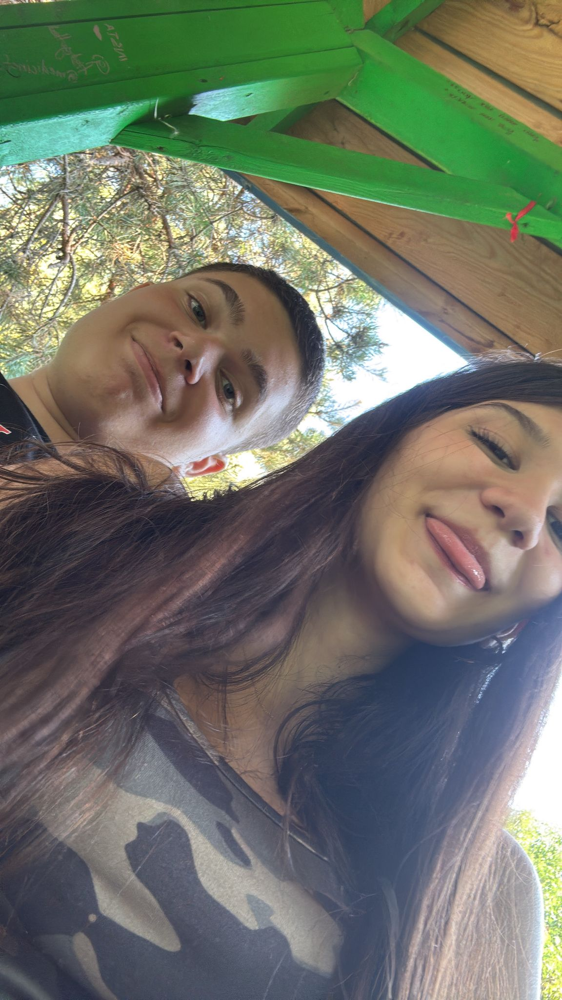
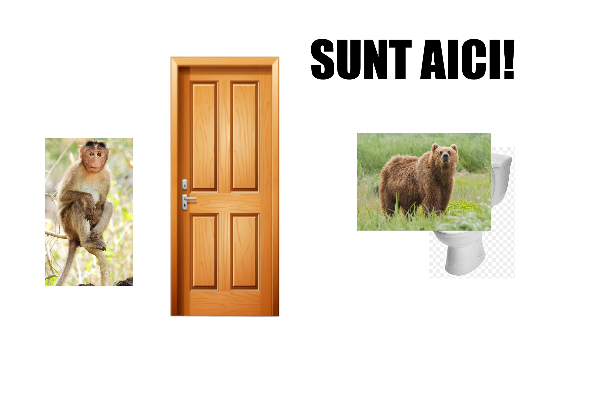
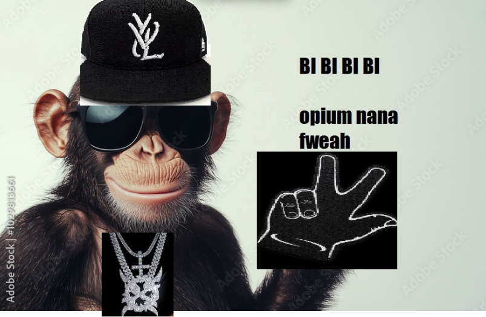
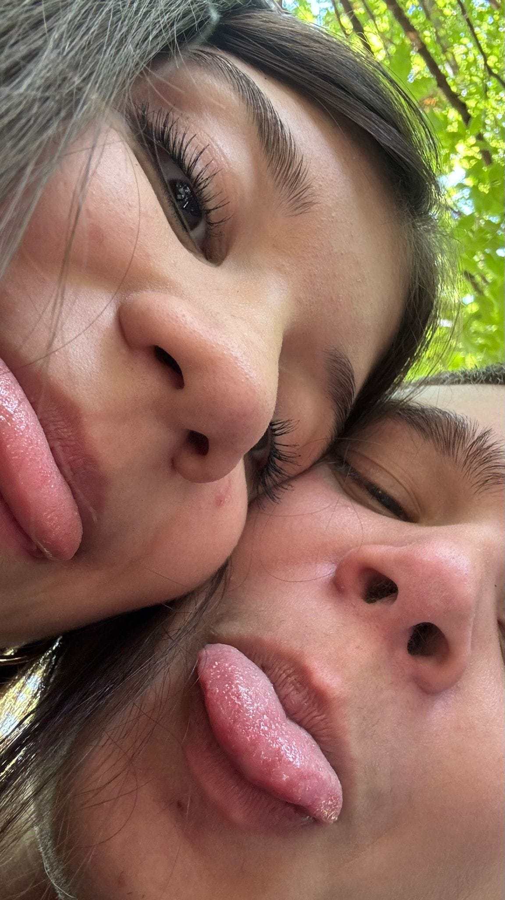
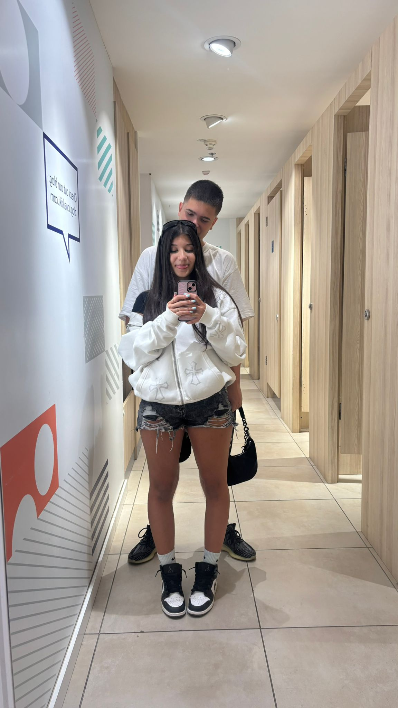
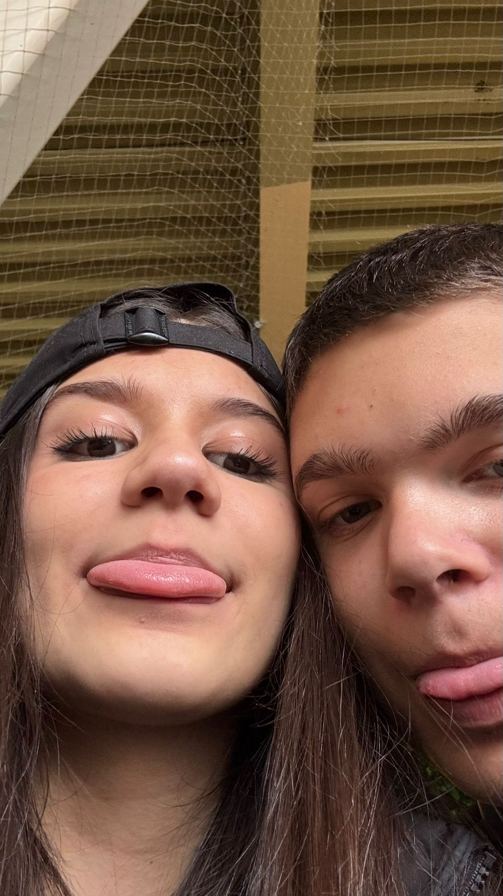

LA MULTI ANI NAAANAAAAA!
holy yap incoming btw.
Fata pe o sarut in poza din stanga si fata pe care o tin in poza din dreapta este Nana. Observati cum in pozele cu ea nu arat deloc serios cum arat deobicei in alte poze? Scriu asta pe calculator nu pentru ca imi e lene, scriu de zici ca am pareza pe creier + parkinson.. (stie ea mai bine cum scriu eu). Cand am cunoscut-o prima oara dormea.(😂) Era o excursie normala (FARA INCIDENTE) ((mint)) in care am ajuns intr-o camera cu mai multe persoane inclusiv ea. Stateam in pat si ea langa mine, imi aduc aminte cum scriam mesaje pe insta tuturor celor din opium sa dea drop la albumul lui carti si in timp ce vorbeam a adormit, mi s-a parut adorabil intr-un fel, mai ales ca dupa s-a trezit si era complet dezorientata de zici ca venise de pe alta planeta. Tot in aceeasi excursie imi aduc aminte cum stateam pe jos pe holul hotelului si mancam seminte ca orice roman si ma uitam la cei doi tudori cum fac box (ceva normal la noi) si dupa colt apare si ea si se aseaza langa mine si incepe sa manance cu mine ca si cum zici ca eram doua babe in rahova ce se uitau la golani pe strada cum se luau la bataie (rahova de fapt e foarte safe!), nu stiu daca observa dar mai aruncam un ochi spre ea, parea ca ma bucura prezenta ei acolo, intr-un fel prinsesem drag? Era placut sa vorbesc cu ea. Am trecut peste dupa pentru ca nu am mai vorbit dupa excursia asta prea mult.. PANA CAND.

prima noastra poza impreuna💗
S-a facut cald afara, LEB organizeaza o excursie la Navodari cu clasele a 9 a, a 7 a si a 6 a. La un moment dat, intr-o seara din aceea excursie, eram la fetele de la 7 a in camera cu inca un coleg sau doi si incep sa vorbesc cu aceasta fata numita Anastasia care intamplator era prietena foarte buna cu Nana! (hell yeah). La un moment dat regretam.. Anastasia vorbea nespus de mult si eu doar am intrebat-o ce face ca se uita in gol.. (help). Dar dupa.. ma cheama afara cu ea.. nu aveam chef, logic, dar dupa o aud cum intreaba "Nana vii si tu cu noi?" (😈) Si instant m-am ridicat si am iesit cu ele. (mai mult pentru Nana logic) Si afara vorbeam de lucruri random, mai mult o bagam in seama pe Nana, dintr-o data parca parca imi placea cam prea mult cum vorbeste, mai ales ca in background era Carti. Pe seara am ajuns in camera cu Nana, doi baieti de la mine din clasa, si inca trei fete de la ea. Eu nu aveam unde sa dorm, dar Nana s-a miscat si mi-a facut loc si chiar mi-a dat si o perna, chiar daca bausem 7 cafele, am putut sa dorm datorita ei ca altfel probabil ma invarteam pe balcon pana la 8 dimineata. Cand m-am trezit m-am dus la toaleta, si o aud din camera cum zice "A plecat Daviddd???" Intr-un ton de parca inca ma voia langa ea (chiar asa era) si in timp ce eram pe tron intra peste mine. Noroc ca eram dupa usa cu tronul si nu m-a vazut si am avut timp sa o anunt.

cum arata situatia gen
Dupa excursie credeam ca s-a terminat, nu am mai vorbit prea mult cu ea si aia e.. DAR, Anastasia imi da mesaj, si ulterior face un grup cu mine, ea si Nana. Nu am mai stat degeaba de data asta, progresiv incepeam sa ii dau din ce in ce mai mult atentie Nanei, ma bagam in seama cu ea mereu, trimteam reel-uri, apeluri, apeluri seara pana adormea. Imi aduc aminte cand am iesit in parc la leagane atunci si am facut tiktok-ul ala impreuna, pe Crank de la Carti (ea nici acum nu stie ca sub ochelari aia ma uitam doar la ea). Apoi ne-am batut cu apa unde s-a intamplat incidentul cu cele doua... (scuze..) Dar apoi i-am dat ghiozdanul meu sa-l tina pe ea sa nu se vada(fraiera nu a vrut sa imi ia tricoul). In ziua aia stiam ca ceva a facut click, ceva se legase. Ne-am mai vazut la picnicul clasei ei, era atat de adorabila cum mi-a trimis un videoclip cu ea in copac si cum facea ca maimuta. (asa ii spuneam pe vremea aia , a sau "bruneta mea preferata", mi am adus aminte) Era atat de adorabil modul ei de a se baga in seama cu mine, ii era foarte rusine si nu stia ce sa faca, imi aduc aminte cum vorbeam cu ea, ma uitam in ochii ei fara rusine si ea se inrosea extrem de rau. Totusi, chiar daca ma uitam fara rusine, tot era ceva cu ochii ei.. gen cum a spus poetu ala DISTRUS si SINGURATIC (te-ai prins?😝) "every time i look in your eyes,i look away mesmerized" ceva de genu..😝

am desenat asta in timpul talking stage ului😭
Apoi Anastasia ne-a despartit o scurta perioada...(ce frustrata). Dar normal ca eu si Nana ne-am impacat si ne-am pus ca cuplu. Si a fost perfect, Nana mereu e acolo pentru mine, am mai zis-o si o mai zic odata, este foarte mamoasa, mereu se asigura ca ma simt iubit si trebuie sa recunosc a fost una dintre cele mai bune veri traite doar din cauza ei. Pe zi ce trecea ma indragosteam mai mult de ea (shit was getting serious) dar daca era o fata ce merita ceva serios fara bataie de joc ea era, doar ea. M-a facut sa renunt la obiceiuri proaste, a avut grija de mine, m-a transformat in ceva mai bun, o varianta mai buna a mea, doar prin simpla ei existenta si iubire.

Acum de la rahovean generic ajunsesem sa port haine matchy si sa rasfat o bruneta de da saraca cu capu in umarul meu cand mergem... dar ba parca a mai zis un scriitor partea cu "haine matchy"... unu de se numea FIU DE MASINA sau ceva de genu, transformers sau ceva? "we match everything, yeah, "cause we in love"? Parca ceva de genu..

Pe parcursul anului ne-am certat de multe ori, ne-am gresit unul altuia dar in final amandoi trageam unul de altul intr-un fel sau altul.. (cum au spus doi mari prozatori, BUNU' si MICI "you can't stop till you find my love") , dar chiar daca ne suparam unul pe altul de parca urma sa ne luam la bataie cu sabile, tot ajungeam sa ne iubim ca inainte la final, si chiar daca s-au intamplat atatea incidente, am ramas cu ea, pentru ca faptul ca e stresata acum si ca ne mai certam nu o sa ma faca sa plec, oricat de urat ne-am comporta, este vorba de Nana, fata de care m-am indragostit pe neasteptate, care m-a facut o persoana mai buna, care m-a facut sa ma simt iubit, care mi-a fost alaturi tot timpul.

Una dintre cele mai bune zile petrecute impreuna💗
Acum suntem in situatia asta ciudata (stii tu la ce ma refer) dar chiar si asa inca ma distrez cat de mult se poate cu tine, chiar ma simt fericit cand suntem impreuna, cand vorbim si cand glumim. Parca ce s-a intamplat a fost ca o fel de resetare, acum se simte ca si cum felul in care ne comportam e 100% natural, ca si cum nimic nu e fortat, ca si cum suntem ca la inceput . ceea e ciudat, la fel cum a spus un mare poet odata, citez, "How the fuck we got to where we started?". E cam derutant, stiu, dar iubirea se simte, parca mai puternica ca alte dati, ca si cum insfarsit ne-am acceptat in totalitate, poate asta mai trebuia? Nu stiu. Dar important este ca acum suntem bine, atat, nu conteaza altceva, important e sa fim fericiti (tu mai mult ca nu tu esti pe primul loc) ((nu iti da ochii peste cap)).

#usforever
Pe final, vreau sa zic ca te iubesc enorm de mult, imi pare rau ca te ranesc uneori, dar adu-ti aminte ca nu o fac cu intentie si ca mai gresesc uneori. Ma bucur ca inca esti aici, si abia astept vara sa ne putem vedea mai des, si sa mergem impreuna la BP (fweah😈).
La multi ani, iubire. 💗💗💗💗💗